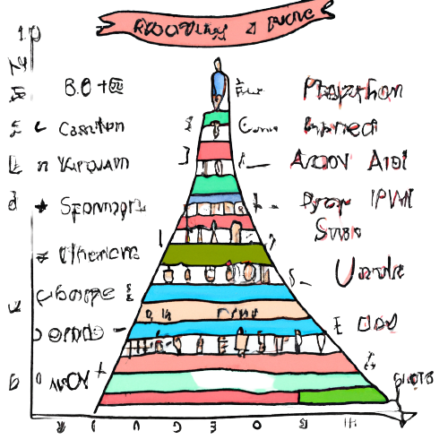
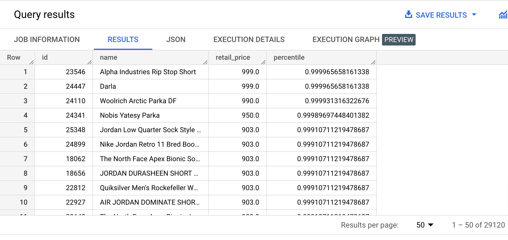

PERCENT_RANK is used to calculate the percentile of each row within a window. As a reminder, in you are in the 90th percentile (percentile is 0.9), it means that you are in the top 10%.
It doesn’t take any parameters but the ORDER BY clause is required in the OVER function.
Type the query below in the BigQuery console and run it. Don't copy paste. 😉
SELECT id,
name,
retail_price,
PERCENT_RANK() OVER(ORDER BY retail_price ASC) AS percentile
FROM bigquery-public-data.thelook_ecommerce.products
ORDER BY retail_price DESC;
Example results:

{% include practice_problems_intructions.html %}bigquery-public-data.ga4_obfuscated_sample_ecommerce.events_*
Write a query that will display the average revenue value of orders that are in the 90th percentile, in January 2021.
| ninetieth_percentile_avg_order_value |
|---|
| 195.04 |
WITH order_percentiles AS
( SELECT ecommerce.purchase_revenue AS order_value,
PERCENT_RANK() OVER(ORDER BY ecommerce.purchase_revenue ASC) AS percentile
FROM example_dataset.valid_purchase_events('20210101', '20210131')
)
SELECT ROUND(AVG(order_value), 2) AS ninetieth_percentile_avg_order_value
FROM order_percentiles
WHERE percentile >= 0.9;